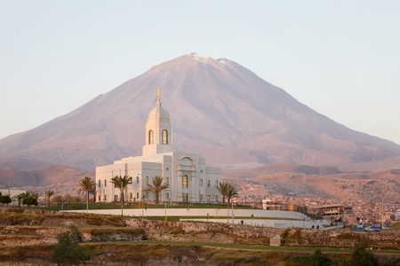

About Me
My name is Diego Andres Huarsaya Cruz. I'm from Peru Arequipa and I'm studying Web Development at BYU-Idaho and I'm currently working on BYU Pathway as a AI Engineer.
Arequipa

Arequipa is a city in southern Peru, known for its colonial architecture and stunning natural surroundings. It is often referred to as the "White City" due to its buildings made from white volcanic stone.